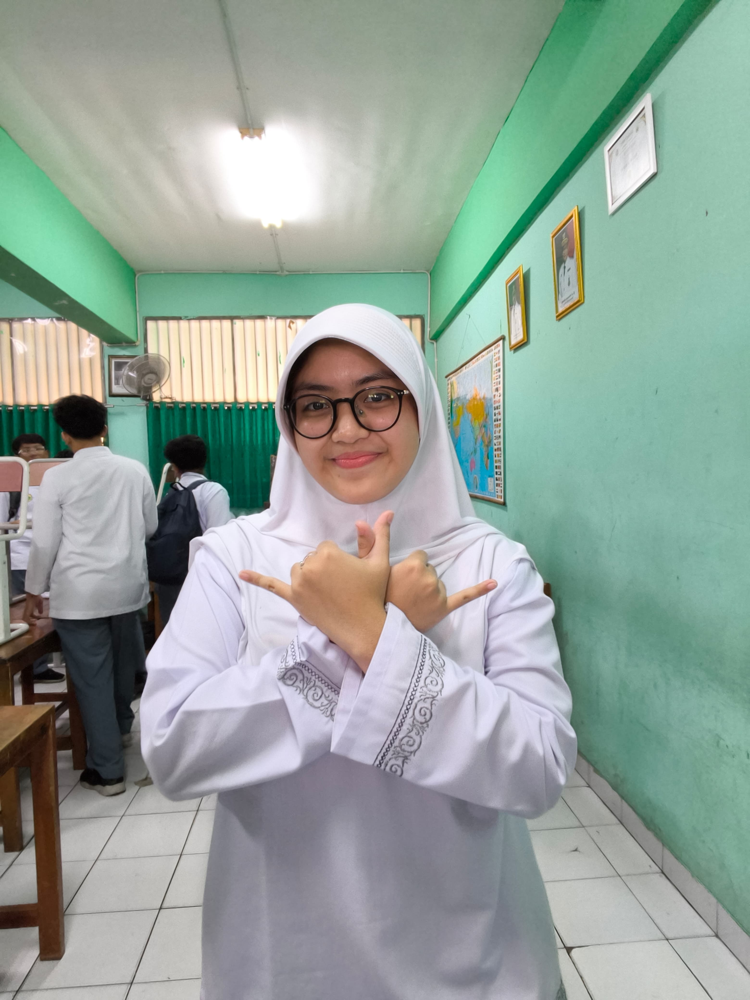
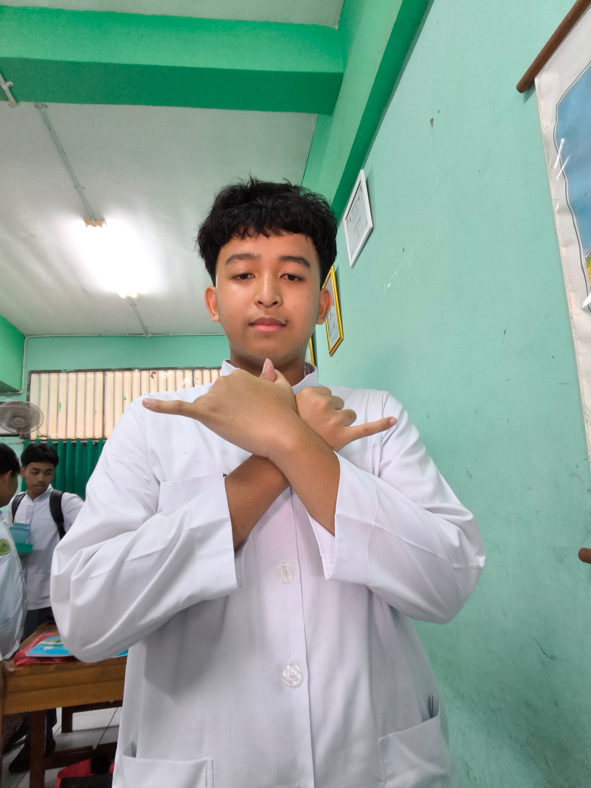
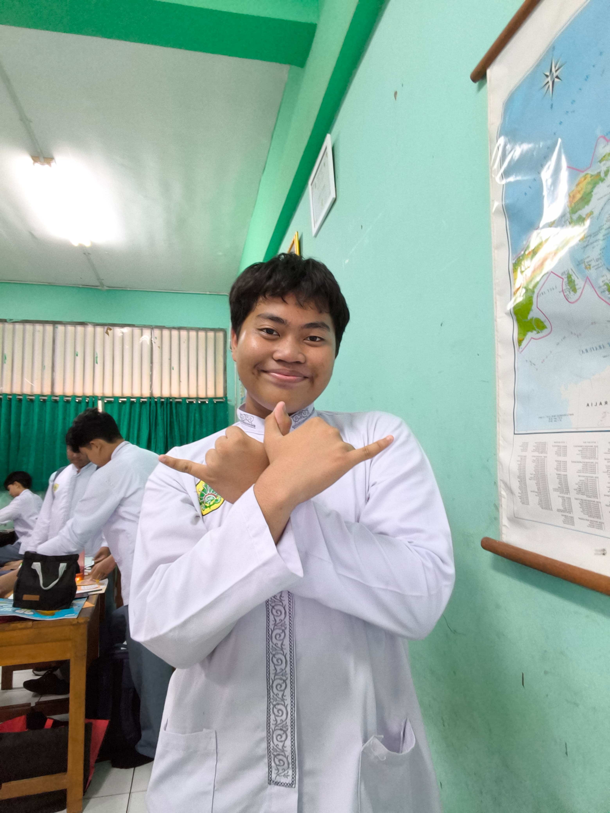
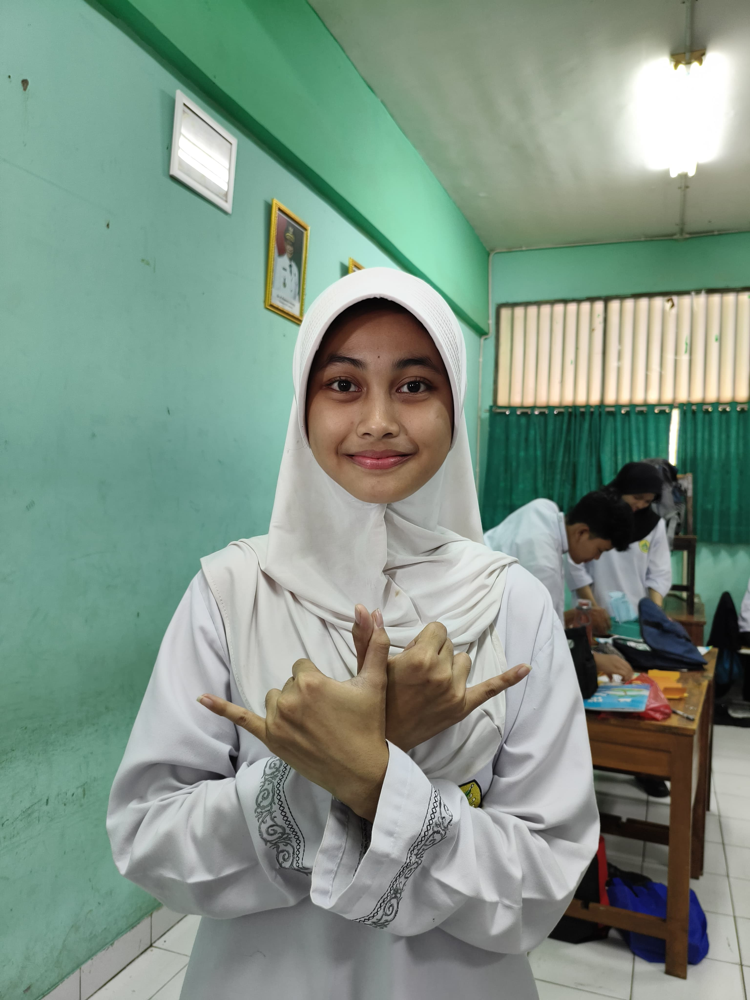

Application Programmer
Valerie Adilanisa Rahmadani
Peran utama seorang Application Programmer adalah menciptakan dan mengembangkan perangkat lunak, baik untuk perangkat komputer maupun ponsel pintar. Tugasnya meliputi perancangan arsitektur program dan pengembangan fitur-fitur baru.

Web Programmer
Athallah Nur Faiz
Seorang Web Programmer bertanggung jawab dalam merancang dan membangun ekosistem sebuah website. Proses ini melibatkan penulisan kode menggunakan bahasa pemrograman seperti HTML, CSS, dan JavaScript untuk menciptakan tampilan yang fungsional.

Graphic Designer
Bayu Dwi Cahyo
Graphic Designer berfokus pada visualisasi ide dan komunikasi melalui elemen grafis. Peran ini mencakup pembuatan aset visual seperti media promosi, logo, hingga antarmuka aplikasi dengan estetika yang komunikatif.

Content Writer
Syaelendra Kanny Laras
Content Writer bertugas memproduksi materi komunikasi tertulis yang informatif dan persuasif. Selain merangkai kata, peran ini melibatkan implementasi SEO agar konten memiliki keterbacaan tinggi di mesin pencari.